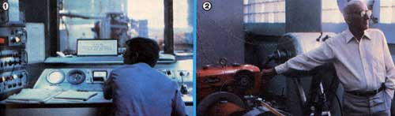

Mother visits what might be the ultimate alternative fuel laboratory:
In the last issue, this publication reported on Brazil's very successful program to replace diesel fuel with "homegrown" liquid alternatives (see MOTHER NO. 64, page 86). Well, this time around, we want to fill you in on the renewable fuel work which one of that nation's most qualified research facilities-Centro Tecnico Aerospacial (CTA)-has been doing at its impressive engineering labs outside of Sao Paulo.
Until five years ago the Aerospace Technical Center was a little-known organization which, as its name implies, undertook various kinds of studies-including laboratory and field testing-on powerplants, aircraft, and aerospace equipment. In 1975, however, the then-president of Brazil attended a CTA demonstration of an alcohol-powered auto that intrigued him immensely . . . especially in light of the fact that OPEC had, just months before, nearly quadrupled crude oil prices (Brazil's petroleum import bill rose from $400 million in 1972 to $4 billion in 1975) .
Within several weeks of that presidential visit, the South American nation witnessed the birth of a national plan-labeled the "pro-alcohol program"-which not only established guidelines for the massive production of ethanol fuel, but also set the wheels in motion to [1] begin an exhaustive study of the effects of burning alcohol in different types of machines, and [2] design and build an engine to burn the renewable fuel exclusively. The people at CTA, of course, were in the forefront of the new research and development effort.
FIRST THINGS FIRST
Naturally, the CTA gave top priority to automotive alcohol fuel experiments. Brazilian engineers adapted four popular automobiles to ethanol and took each of the vehicles on a 5,000-mile "shakedown" tour along the border of their country, experiencing no serious difficulties.
The test run was made under "real-life" conditions . . . and included unpaved roads, steep mountains, extreme weathe r, and ordinary cross-country driving.
Because both the original design of-and the modifications made to-each auto's engine had been studied and recorded, the scientists learned exactly what parameters were desirable for alcoholpowered motors . . . and they applied that knowledge to their next phase of operations: developing an engine specifically for use with ethanol.
A MARRIAGE OFECONOMY AND PERFORMANCE
The national pro-alcohol program, as expected, stimulated many of Brazil's automakers to develop their own ethanol-fueled cars . . . but some of the early prototypes weren't entirely acceptable because-although they were very drivable and even more powerful than their gasoline-burning counterparts-the experimental cars often fell short of the economy limit set by the Brazilian government. (A loss of more than 15% in fuel mileage compared to that of a conventional auto was not allowable.)
Having gotten a head start on the industry, then, the engineers at CTA felt confident that they could put together an alcohol-burning powerplant of their own. design. The task took three years of building and testing, and involved setting up and monitoring some 730 cars . . . which-to date-have covered well over 13 million collective miles on the alternative fuel. So successful were the results of the project that the Aerospace Technical Center was given full responsibility for assaying and certifying the other new alcohol-powered models before they could be publicly marketed.
ALTERNATIVES AND THE FUTURE
According to Fernando Gama Rodrigues, senior engineer at the CTA test site, Brazilian alcohol-powered vehicles are now efficient enough that they no longer require the attention of his research staff. Any improvements from this date on will be those initiated by manufacturers from year to year.
Of late, CTA researchers have been working wholeheartedly to extend the ap plications of alcohol as an energy source and to come up with additional alternatives to diesel fuel. The South American scientists have successfully converted all types of turbines to burn ethanol. This means not only that jet aircraft can use the renewable fuel, but also that electrical generators-driven by stationary gas turbines-can burn the homegrown resource . . . to provide inexpensive power to the Brazilian public regardless of OPEC's dictates.
As for diesel fuel replacement, the Sao Paulan researchers have been keeping equally busy. To date, they've cultivated over 100 domestic vegetable oils for testing purposes, and have pretty much narrowed the choice down to two: peanut and palm. (The reason for excluding most of the others was not a technical one, but the fact that those plants had either food or feed value. Peanuts, however, are so abundant in Brazil that their use for fuel wouldn't noticeably dent the other markets.) The plan is to use the existing surpluses of peanut oil for fuel (and to increase the supply) until a substantial palm nut crop can be harvested ( the tree comes to maturity in about eight years and produces for an average of 30), at which point the country will utilize both types of oil as needed.
Without any doubt, Brazil's Aerospace Technical Center is a major force in that country's struggle for energy independence, a technological "war" which is being fought out of necessity. One day (maybe sooner than we think) our own nation may be faced with the same decision . . . and there's no reason why we shouldn't start to make our choices now!
EDITOR'S NOTE: MOTHER is sponsoring an alcohol and alternative fuel tour of Brazil from January 16 to February 1, 1981. The trip will give participants a chance to see, firsthand, what that colorful South American nation is doing to become energy self-sufficient (besides giving those lucky individuals an, opportunity to lounge on Rio's beautiful sunny beaches during North America's coldest season). Sound interesting? Turn to page 90 for more details!
|
 [1] A researcher monitors the performance of an engine. [2] Senior Engineer Gama discusses the results of the CTA's turbine testing. |
|
|